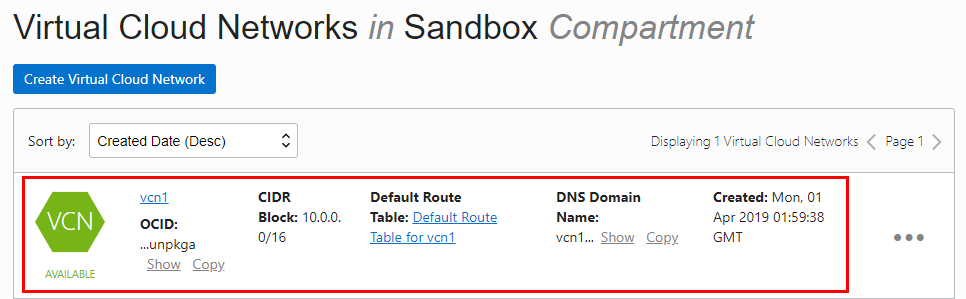
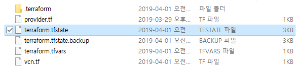

14.2.4 Terraform Configuration 실행하기
Terraform 실행
CMD 실행
Configuration 파일이 있는 경로로 이동
초기화 실행
초기화를 수행하면 provider.tf에서 사용하는 OCI Provider를 자동으로 .terraform 폴더 밑으로 다운받습니다.> terraform init- 실행예시
D:\example_vcn>terraform init Initializing provider plugins... - Checking for available provider plugins on https://releases.hashicorp.com... - Downloading plugin for provider "oci" (3.20.0)... Terraform has been successfully initialized! You may now begin working with Terraform. Try running "terraform plan" to see any changes that are required for your infrastructure. All Terraform commands should now work. If you ever set or change modules or backend configuration for Terraform, rerun this command to reinitialize your working directory. If you forget, other commands will detect it and remind you to do so if necessary. D:\example_vcn>dir D 드라이브의 볼륨: MyData 볼륨 일련 번호: D045-88C8 D:\example_vcn 디렉터리 2019-04-01 오전 10:47 <DIR> . 2019-04-01 오전 10:47 <DIR> .. 2019-04-01 오전 10:47 <DIR> .terraform 2019-03-29 오후 04:33 402 provider.tf 2019-04-01 오전 10:41 500 terraform.tfvars 2019-03-29 오후 04:58 295 vcn.tf 3개 파일 1,197 바이트 3개 디렉터리 711,346,126,848 바이트 남음 D:\example_vcn>실행 플랜 확인
플랜 명령을 수행하면, 실제 OCI에 수행되는 계획을 확인할 수 있습니다. 최초 수행하면 create되고, 이후 OCI 자원 현재 상태에 따라 변경 혹은 삭제됩니다.> terraform plan- 실행예시
D:\example_vcn>terraform plan Refreshing Terraform state in-memory prior to plan... The refreshed state will be used to calculate this plan, but will not be persisted to local or remote state storage. ------------------------------------------------------------------------ An execution plan has been generated and is shown below. Resource actions are indicated with the following symbols: + create Terraform will perform the following actions: + oci_core_virtual_network.vcn1 id: <computed> cidr_block: "10.0.0.0/16" compartment_id: "ocid1.compartment.oc1..aaaaaaaatz24wcxhliq6egof4odfayzysfbj3yksdmhcava7ambc2w2XXXXX" default_dhcp_options_id: <computed> default_route_table_id: <computed> default_security_list_id: <computed> display_name: "vcn1" dns_label: "vcn1" freeform_tags.%: <computed> state: <computed> time_created: <computed> vcn_domain_name: <computed> Plan: 1 to add, 0 to change, 0 to destroy. ------------------------------------------------------------------------ Note: You didn't specify an "-out" parameter to save this plan, so Terraform can't guarantee that exactly these actions will be performed if "terraform apply" is subsequently run. D:\example_vcn>실행
실행하면 실제 OCI에 Terraform 계획이 적용되어 관련된 OCI 자원이 생성됩니다. 또한 실행후 terraform output 명령을 통해 outout 변수를 조회할 수 있습니다.> terraform apply- 실행예시
D:\example_vcn>terraform apply An execution plan has been generated and is shown below. Resource actions are indicated with the following symbols: + create Terraform will perform the following actions: + oci_core_virtual_network.vcn1 id: <computed> cidr_block: "10.0.0.0/16" compartment_id: "ocid1.compartment.oc1..aaaaaaaatz24wcxhliq6egof4odfayzysfbj3yksdmhcava7ambc2w2XXXXX" default_dhcp_options_id: <computed> default_route_table_id: <computed> default_security_list_id: <computed> display_name: "vcn1" dns_label: "vcn1" freeform_tags.%: <computed> state: <computed> time_created: <computed> vcn_domain_name: <computed> Plan: 1 to add, 0 to change, 0 to destroy. Do you want to perform these actions? Terraform will perform the actions described above. Only 'yes' will be accepted to approve. Enter a value: yes oci_core_virtual_network.vcn1: Creating... cidr_block: "" => "10.0.0.0/16" compartment_id: "" => "ocid1.compartment.oc1..aaaaaaaatz24wcxhliq6egof4odfayzysfbj3yksdmhcava7ambc2w2XXXXX" default_dhcp_options_id: "" => "<computed>" default_route_table_id: "" => "<computed>" default_security_list_id: "" => "<computed>" display_name: "" => "vcn1" dns_label: "" => "vcn1" freeform_tags.%: "" => "<computed>" state: "" => "<computed>" time_created: "" => "<computed>" vcn_domain_name: "" => "<computed>" oci_core_virtual_network.vcn1: Creation complete after 1s (ID: ocid1.vcn.oc1.iad.aaaaaaaamhaliugs64qu4qih3lktm4mibecxebkrjegcrptgnveg72unpkga) Apply complete! Resources: 1 added, 0 changed, 0 destroyed. Outputs: vcn1_ocid = [ ocid1.vcn.oc1.iad.aaaaaaaamhaliugs64qu4qih3lktm4mibecxebkrjegcrptgnveg72unpkga ] D:\example_vcn>terraform output vcn1_ocid ocid1.vcn.oc1.iad.aaaaaaaamhaliugs64qu4qih3lktm4mibecxebkrjegcrptgnveg72unpkga D:\example_vcn>실행결과 확인
- OCI 콘솔에서 내비게이션 메뉴의 [Core Infrastructure] >> [Networking] 으로 이동합니다.
- [Virtual Cloud Networks] 항목에서 Terraform Configuration시 지정한 Comparment를 선택합니다.
- 그림과 같이 생성된 VCN을 확인 할 수 있습니다.

State 관리
- 다시 실행
다시 terraform apply를 실행하면 아래와 앞서 이미 실행되어 자원이 생성되었기 때문에, 변경 적용할 것이 없다고 표시됩니다.
D:\example_vcn>terraform apply oci_core_virtual_network.vcn1: Refreshing state... (ID: ocid1.vcn.oc1.iad.aaaaaaaamhaliugs64qu4qih3lktm4mibecxebkrjegcrptgnveg72unpkga) Apply complete! Resources: 0 added, 0 changed, 0 destroyed. Outputs: vcn1_ocid = [ ocid1.vcn.oc1.iad.aaaaaaaamhaliugs64qu4qih3lktm4mibecxebkrjegcrptgnveg72unpkga ] D:\example_vcn>Terraform State 관리 파일 terraform 설정을 실행하면, 실행후 아래처럼 terraform.tfstate 파일이 생성되고 생성된 자원에 대한 id와 관련 속성 등을 기록하여 자원 상태를 관리하게 됩니다. 그래서 다시 terraform apply를 통해 실행하더라도, tfstate에서 관리되는 id의 자원의 현재 OCI 자원의 현재 상태를 확인(Refresh)한 상태와 적용할 Plan을 비교하여 변경할 사항이 있는 지 확인후 반영됩니다.
- terraform.tfstate
{ "version": 3, "terraform_version": "0.11.13", "serial": 5, "lineage": "7d69ef02-0a78-2ef7-a40b-ba87a546ee1f", "modules": [ { "path": [ "root" ], "outputs": { "vcn1_ocid": { "sensitive": false, "type": "list", "value": [ "ocid1.vcn.oc1.iad.aaaaaaaamhaliugs64qu4qih3lktm4mibecxebkrjegcrptgnveg72unpkga" ] } }, "resources": { "oci_core_virtual_network.vcn1": { "type": "oci_core_virtual_network", "depends_on": [], "primary": { "id": "ocid1.vcn.oc1.iad.aaaaaaaamhaliugs64qu4qih3lktm4mibecxebkrjegcrptgnveg72uXXXXX", "attributes": { "cidr_block": "10.0.0.0/16", "compartment_id": "ocid1.compartment.oc1..aaaaaaaatz24wcxhliq6egof4odfayzysfbj3yksdmhcava7ambc2w2XXXXX", "default_dhcp_options_id": "ocid1.dhcpoptions.oc1.iad.aaaaaaaauesoawgcpufaregu4mkoiurskpuwq5zuozdnwdldlwk6qhxXXXXX", "default_route_table_id": "ocid1.routetable.oc1.iad.aaaaaaaa3oceg2khn3idgygwo6bfckzigot3jdephycokh2bag3b3fqXXXXX", "default_security_list_id": "ocid1.securitylist.oc1.iad.aaaaaaaamui62bryejqxhg24ban27jqy2jmhzu33eglbe5t7n6huyscXXXXX", "defined_tags.%": "0", "display_name": "vcn1", "dns_label": "vcn1", "freeform_tags.%": "0", "id": "ocid1.vcn.oc1.iad.aaaaaaaamhaliugs64qu4qih3lktm4mibecxebkrjegcrptgnveg72uXXXXX", "state": "AVAILABLE", "time_created": "2019-04-01 01:59:38.825 +0000 UTC", "vcn_domain_name": "vcn1.oraclevcn.com" }, "meta": { "e2bfb730-ecaa-11e6-8f88-34363bc7c4c0": { "create": 900000000000, "delete": 900000000000, "update": 900000000000 } }, "tainted": false }, "deposed": [], "provider": "provider.oci" } }, "depends_on": [] } ] }
- 다시 실행
삭제
앞서 Terraform으로 생성된 자원을 삭제하려면 다음 명령을 수행하면 됩니다.> terraform apply- 실행예시
D:\example_vcn>terraform destroy oci_core_virtual_network.vcn1: Refreshing state... (ID: ocid1.vcn.oc1.iad.aaaaaaaamhaliugs64qu4qih3lktm4mibecxebkrjegcrptgnveg72unpkga) An execution plan has been generated and is shown below. Resource actions are indicated with the following symbols: - destroy Terraform will perform the following actions: - oci_core_virtual_network.vcn1 Plan: 0 to add, 0 to change, 1 to destroy. Do you really want to destroy all resources? Terraform will destroy all your managed infrastructure, as shown above. There is no undo. Only 'yes' will be accepted to confirm. Enter a value: yes oci_core_virtual_network.vcn1: Destroying... (ID: ocid1.vcn.oc1.iad.aaaaaaaamhaliugs64qu4qih3lktm4mibecxebkrjegcrptgnveg72unpkga) oci_core_virtual_network.vcn1: Destruction complete after 1s Destroy complete! Resources: 1 destroyed. D:\example_vcn>
** 이 글은 개인으로서, 개인의 시간을 할애하여 작성된 글입니다. 글의 내용에 오류가 있을 수 있으며, 글 속의 의견은 개인적인 의견입니다. **